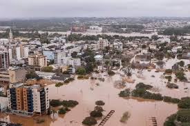
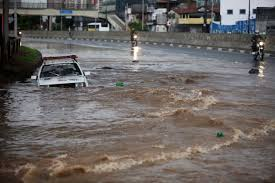
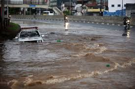

O Problema
Enchentes causam tragédias recorrentes no Brasil, afetando milhões e causando perdas humanas e econômicas severas.
Faltam sistemas eficazes de alerta e gestão para proteger as populações vulneráveis.
Tecnologias Usadas
Utilizamos IA, sensoriamento remoto e sensores IoT.
O sistema oferece mapas de risco, alertas em tempo real e rotas de fuga baseadas em dados de tráfego.
Objetivos
Salvar vidas por meio da antecipação de desastres e melhorar a resposta emergencial das autoridades locais.
Reduzir prejuízos econômicos com planejamento urbano e alertas eficazes em tempo real.

Público-Alvo
População em áreas de risco, Defesa Civil, prefeituras e ONGs atuando em gestão de emergências urbanas.
Também impacta cidadãos com interesse em segurança urbana e prevenção de riscos hidrológicos.
Benefícios
Redução de impactos com alertas personalizados, rotas de fuga e dados integrados para resposta rápida.
Inclusão digital com aplicativo offline, integração com WhatsApp e comunicação acessível.
Uso no Dia a Dia
Usuários recebem alertas antecipados, veem mapas atualizados e registram ocorrências de forma colaborativa.
Prefeituras acessam dashboards com dados em tempo real e gerenciam planos de evacuação.
SlideShow

 
